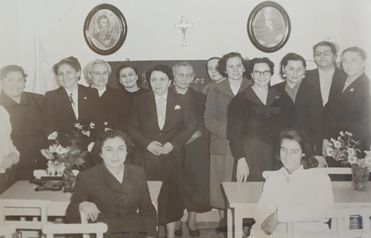
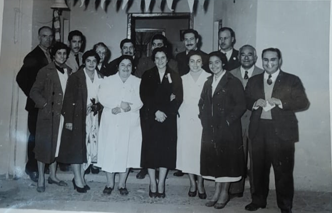
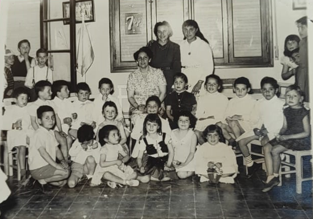
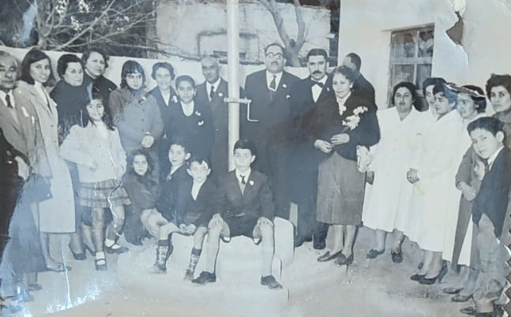
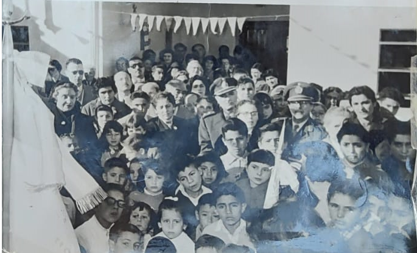

Escuela

Inauguración del Jardin de Infantes 20 de Junio, que da origen a la escuela. Año 1957.

Foto: Primeras maestras, acompañadas por la Sra. De Rossi y vecinos del barrio.
La escuela se crea por Resolución 487. Decreto 3578 del 10 de abril de 1958

Foto: Directora Julia De Rossi. Maestra Alcira Sarquis. Pta de la liga de madres Sra. María Leonor de Arrigoni.
Asi nació La Escuela "20 de Junio" en las instalaciones Cedidas por el Club Corcemar y en donde la Sra. Flora de Sorrentino la llamó por 1° vez "20 de Junio"
Acto Inaugiración
El acto se realizo el 20 de Junio del 1958

Foto: Autoridades, personal docente, miembros de Coop y alumnos. Año 1958

Foto: Público presente.